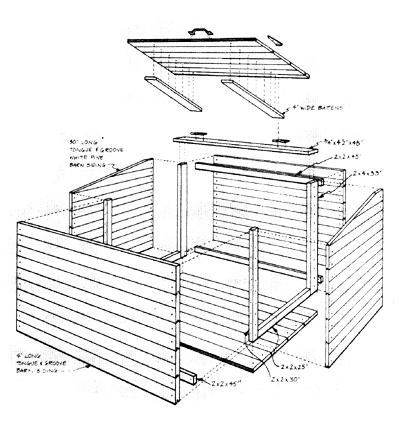
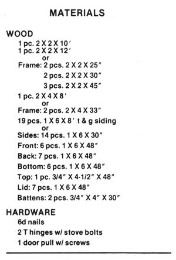
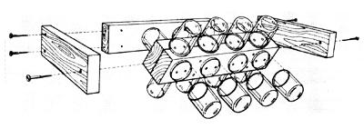
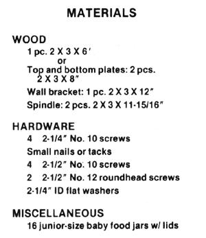
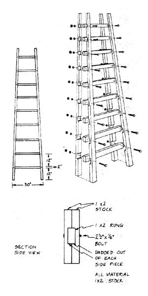
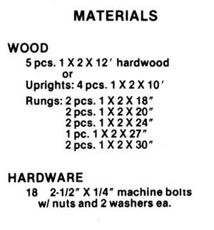

Some of the best homestead tools and devices around aren't for sale in any store. They're the ones conceived and tested on farms-and in back yards-around the world. Many are homemade varieties of commercially available implements . . . others are personal answers to particular how-to-do-it problems. Whatever, they all have one thing in common: A large part of the pleasure that comes from their use derives from the knowledge that they're homemade.
And so it is with the following projects, selected from a helpful new book put out by the folks at Rodale Press. In MOTHER NO. 46 (pages 60-61), we showed you four items from this book that were particularly well suited for summertime use. This time, we've selected some articles that will prove handy in early fall. And Build It Better Yourself offers construction plans for over 200 more . . . a great number of which could surely benefit you!
If you have a few chickens, rabbits, goats, or other animals, you know about the hassle of storing sacks of feed. You don't want to visit the grain crib daily, but you don't want feed spilling in a corner of the barn or shed either. This feed bin is designed to store those sacks of grain. It will give longest service if you keep it inside a barn or otherwise protect it from the weather. It is not intended for outside storage.
The bin was made from standard tongueand-groove siding. The vagaries of milling the tongues and grooves on the boards and the tightness with which individual carpenters will lay them up makes it difficult to provide exact numbers and widths of boards needed. Inevitably, you will have to rip several, but don't start until you're sure, by measurement, of the widths to which you must rip them.
[1] Start by cutting 2 X 2 stock: two pieces 25 inches long, two pieces 30 inches long, and three pieces 45 inches long. Cut two 33-inch lengths of 2 X 4. These are the nailers, or frame, on the inside of the box.
[2] Use tongue-and-groove white pine barn siding or comparable material (plywood, for example) for the sides, front, back, top, and bottom of the bin, using 6d nails to fasten the boards to the frame pieces. Assemble the sides first. Cut seven 30-inch lengths of the siding and nail them together, using a 33-inch 2 X 4 and a 30-inch 2 X 2 as nailers, as shown. Rip the groove from the board that will be the bottom of the side. Lay up the boards, nailing them to the frame. One of the 25inch lengths of 2 X 2 is nailed inside the bottom edge of the side. Before nailing the top board or two to the frame, set them in place and mark them for the angle that must be ripped. After cutting the boards, nail them in place. Construct the second side in the same fashion.
[3] Next, nail 4-foot tongue-and-groove pieces to join the two sides and form the front. Nail one of the 45-inch 2 X 2 nailers at the bottom. Make the back in the same way, but put a second nailer at the top to support your lid hinges. Remember too that the back is taller than the front. Rip the grooves off the siding lengths that will be the bottom boards, and the tongue off the pieces that will be the top boards.
[4] Turn the four-sided frame over and nail 4-foot lengths of tongue-and-groove boards on for the bottom. Turn it right side up. Rip the tongue and groove off another 4-foot piece and nail it to the top of the back of the bin. This will anchor your hinges.
[5] To make the lid, measure from the front edge of the box to the trimmed hinge anchor board you installed at the top of the back. This gives the total width for the lid. The two battens will be 1 inch shorter. Cut the battens from the tongue and groove, or any 1-inch stock. Nail the lid together, using nails that are long enough to clinch.
[6] Fasten the lid with two T hinges. It's best to use stove bolts that go completely through the lid and battens. Finish the box by adding a handle or knob in front. Set your bin on blocks or a shipping pallet.
Many garden plants produce seeds that are easily collected at the end of the growing season. (See "Save Your Own GardenGrown Vegetable Seed", pages 8081 in this issue.) With a fixture such as this to keep the seeds sorted, clean, and safe over the winter, gardeners can start off the following season with an inexpensive supply of seeds that are as good as those bought in the store. Moreover, this seed holder is good for storing excess seed you paid for but didn't use.
The most important part of this holder is its jars. David Caccia, who designed the device, used junior-size baby food jars, but if you have a supply of another size, adjust these measurements to accommodate them.
Because the containers used in this storage rack are fairly airtight, make sure the seeds you save are well dried before you stash them away. And do put a dated slip of paper in each jar, identifying the seed.
[1] Cut the wood into five pieces: two flinch lengths, one 12-inch length, and two pieces just 1116 inch less than 12 inches. Lightly sand the ends.
[2] To form the square spindle part of the seed holder, fasten the two pieces that are just under 12 inches back to back, using four 2-114-inch No. 10 screws. Keep the screws at least 2 inches from the ends so they don't interfere with the spindlemounting screws later.
[3) Fasten the sixteen jar lids, four to a side, evenly spaced, with nails or tacks.
[4] Drill two holes in the 12-inch piece, centered and about 4 inches from each end. This will be the part of the bracket that is mounted to the wall. For the other two pieces, drill two holes in one end, about 1112 inches apart and 9116 inch from the end of the wood. (These are for fastening the 8-inch pieces to each end of the 12-inch piece.) You can also drill small pilot holes in the ends of the 12-inch piece. On the opposite end of each of the 8-inch pieces, drill a 5116-inch hole centered in 1114 inches from the end for attaching the spindle.
[5] Assemble the U-shaped frame using 2112-inch No. 10 screws. Drill small pilot holes into the ends of the spindle. Using two 2112-inch No. 12 roundhead screws, with a washer under each head, attach the spindle. Don't tighten these screws too much or the spindle will not turn.
[6] Screw the jars into the lids, and your seed holder is ready for the seeds.
A sturdy ladder is an invaluable orchard and woodlot tool, but it is also a fairly expensive piece of equipment. This truss ladder will not only shave that expense, it will be a challenging woodworking project for any homestead handyman. And its use doesn't need to be restricted to the orchard and woodlot.
The ladder shown was constructed, following an old design, from 1 X 2 material. The rungs should be hardwood and the uprights can be either hardwood or softwood. Ours was made 10 feet tall, but the design is adaptable for any length from 8 to 14 feet.
Just be sure to keep the bolts tight!
[1] Rough cut the rungs from 1 X 2 hardwood. You will need two 18 inches long, two 20 inches long, two 24 inches long, one 27 inches long, and two 30 inches long. If you are using 12-foot lengths of hardwood to construct the lad. der, cut 2 feet off each of four boards, making four rungs and the uprights. A fifth 12-footer will yield the remainder of the necessary rungs.
[2] Layout is half the battle in this project. Since the uprights are converging, the dadoes for the rungs must be cut on a slight angle. To determine the angle, lay out two of the uprights on your shop floor, the bottom ends 30 inches apart, the tops 12 inches apart. To ensure that all is level and plumb, you should lay out the uprights in relation to a center line, whether it be an imaginary one or an actual chalk line drawn on the shop floor, and a bottom lineone perpendicular to the center line. Measure up 12 inches along the center line and lay the first rung (a piece of 1 X 2) across the two uprights, making surethrough the use of a framing squarethat it is perpendicular to the center line. Mark the uprights above and below the rung for the dado. Measure 12 inches up along the center line from the top of that first rung to the bottom of the second rung. Lay it in place and mark the uprights for dadoing. Keep repeating the process until the uprights are marked for all nine rungs. Since you need four uprights altogether, mark a second pair, using the first pair as patterns. If you think about it, you'll see that the uprights are not exactly alike. Rather they are mirror images, so don't lay out one upright and use it as a pattern for the otherthree.
[3] Cut all the dadoes, making them 318 inch deep.
(4] Lay out the uprights again, this time across sawhorses. Put the rungs in place and lay the second pair of uprights atop them. Now drill a 114-inch hole through each joint of rung and uprights. Fasten the joints with 2-112-inch by 114-inch machine bolts, each with two washers.
[5] After the ladder is completely assembled, trim off the excess rung material.
From Build It Better Yourself by the editors of Organic Gardening and Farming, $16.95 hard cover, co (C) 1977 by Rodale Press, Inc.,Emmaus, Pa Reprinted we permission of the publisher . and available from any good bookstore or from Mother's Bookshelf.
|
 |
 |
 |
|
 |
 |
 |